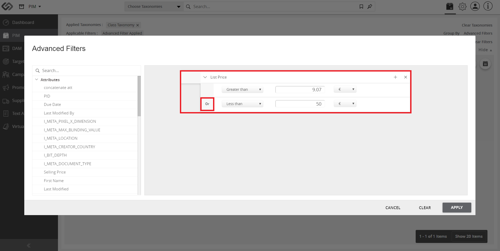

Parametric Search¶
The Parametric Search feature provides general users the ability to search for products or assets using various data fields that have been used to describe a product or article. The users can narrow down items using the specified criteria.
| Key Term: |
|
| Description: |
|
| Related topics: | |
| Application: |
|
How-to: Parametric Search¶
To do a parametric search, follow these steps:
- Log in and go to PIM.

- Click the Sort & Filter button found on the upper right corner. Once clicked, it will expand the selection.
- Click the Advanced Filters.
- Click the Attributes on the pop-up window and select an attribute (e.g. List Price).
- After selecting an attribute, the attribute options will appear on the right. Click on the first drop-down list (the Contains drop-down list) and select the appropriate operator.
- After selecting an operator (e.g. Greater Than), select the value and unit. Click the Apply button.
- Wait for the results to be displayed based on the search criteria. The search criteria can be found in the Applied Filter section as shown.
- For an improved and more refined search, use multiple properties (attributes/tags).
Note: Multiple criteria can be applied for a single property as well as using an “OR” operation.
